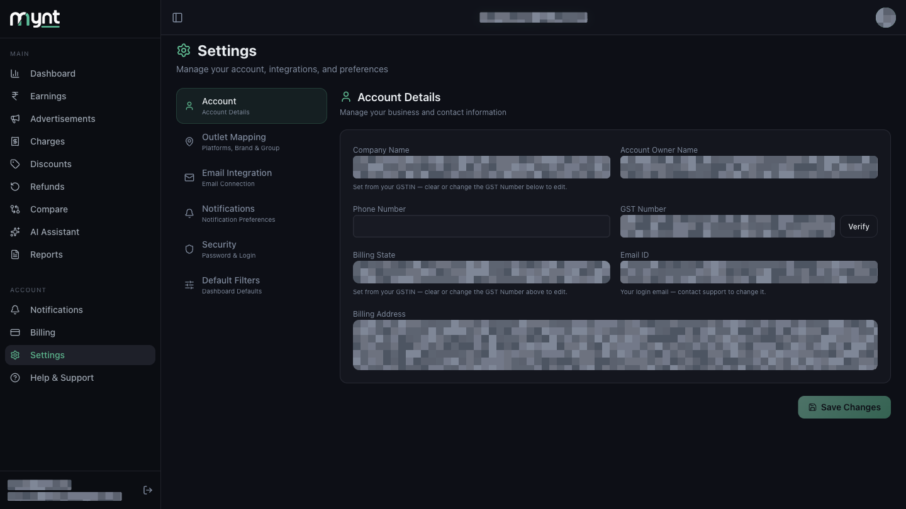
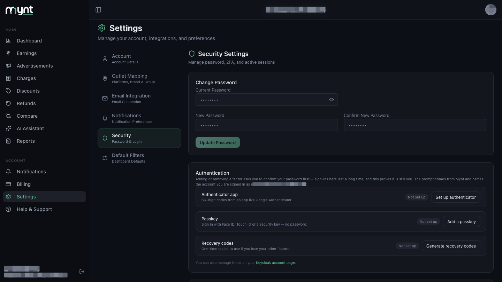
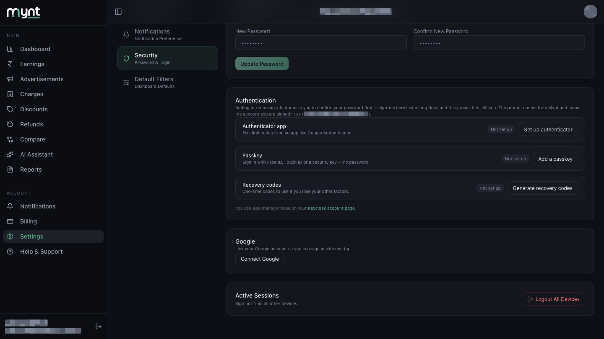
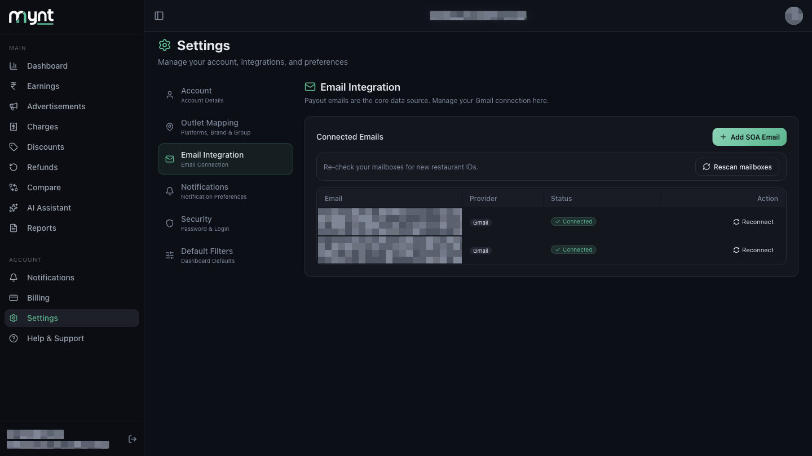

Where to find Reconnect and Logout All Devices inside Settings
| Sign out of Mynt | This device only — sidebar → Sign out |
|---|---|
| Sign out everywhere | Settings → Security → Active Sessions → Logout All Devices |
| Change which Gmail is connected | Settings → Email Integration → Reconnect |
These are separate. Signing out of Mynt does not revoke Gmail access, and changing your Gmail does not sign you out.
Use this if you lost a laptop or phone, or think someone else has your session.
In the left menu, tap Settings.

In the settings menu, tap Security.

Scroll down to Active Sessions and tap Logout All Devices.

The same Security page has Change Password at the top. You need your current password to set a new one. Below it, Authentication lets you add an authenticator app, a passkey, or recovery codes. See How sign-in and account access work.
Mynt does not have a self-serve Disconnect button today.
| Use a different payout mailbox | Settings → Email Integration → Reconnect on that row → pick the other Google account → confirm |
|---|---|
| Add another mailbox | Settings → Email Integration → Add SOA Email |
| Re-check for new restaurant IDs | Settings → Email Integration → Rescan mailboxes |
| Fully remove Gmail from Mynt | Contact support and revoke Mynt in Google Account permissions |

A mailbox still waiting for permission shows Authorize instead of Reconnect.
Full guide: How to disconnect or change Gmail.
Or open Help & Support in Mynt and raise a ticket.